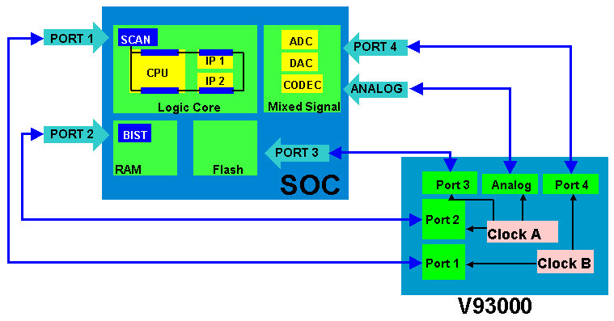
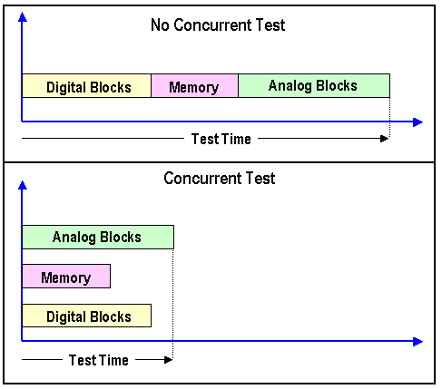

Concurrent Tests (CCT)
The trend toward higher System-on-Chip (SOC) integration of many independent functional system blocks into a single packaged device means that, although the device may become cheaper, testing it may not, because of the many separate functions that need to be tested.
One approach to reduce the cost of test and also to reduce the test time, is to implement the parallel test strategy of concurrent testing (CCT).
With a concurrent test, you take advantage of the multi-port setup techniques to test the cores of your DUT in parallel and also to test your device closer to its natural operating environment.
You can also apply the concurrent test procedure to a multi-site setup, which improves your test times even more.
The concept of concurrent testing is quite simple; you test independent blocks of a DUT at the same time by allocating separate ports to pins or groups of pins for each independent block. Each block will then typically have its own test setup (levels , timing and vectors).
The figure below shows this principle.

Using a concurrent test setup, you can execute the following tests in parallel:
- DC Tests
- Functional Test (digital)
- Memory Test
- Analog Test
- Scan Test
However, when executing a scan test in parallel with other tests, the scan format cannot be utilized.
Without concurrent testing, a DUT with these types of functional blocks is typically tested serially, block by block. The test time being the sum of each block's test time.
Concurrent testing allows you to test the functional blocks in your DUT in parallel, hence reducing the test time to the longest single path of all the blocks.
This principle is illustrated in the figure below.

Requirements for a concurrent test:
Concurrent Test requires a multi-port setup to allow each pin, where necessary, to have access to separate resources such as, digital test (with or without scan), memory algorithm generation, digital capture and digital source as well as access to the analog Arbitrary Waveform Generator and Digitizer depending on how you allocate the pins to the ports.
Requirements for the DUT:
- Each of the blocks or cores must be independent from each other.
- They must be completely isolated in their access, control and output.
- Each core can have a different frequency and timing requirement.
For more information see DFT requirements and Device design for concurrent testing.
Functional changes
- Introduced before SmarTest 6.3.2